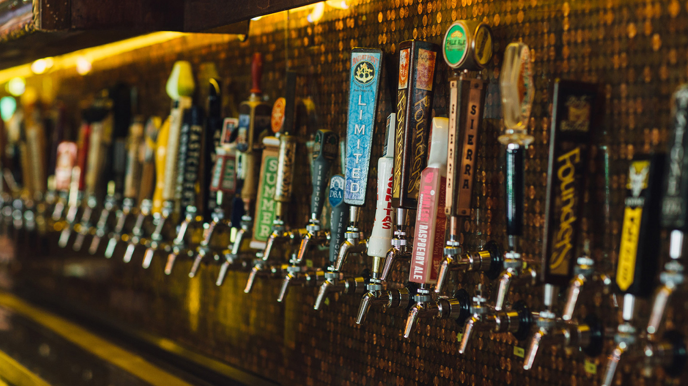
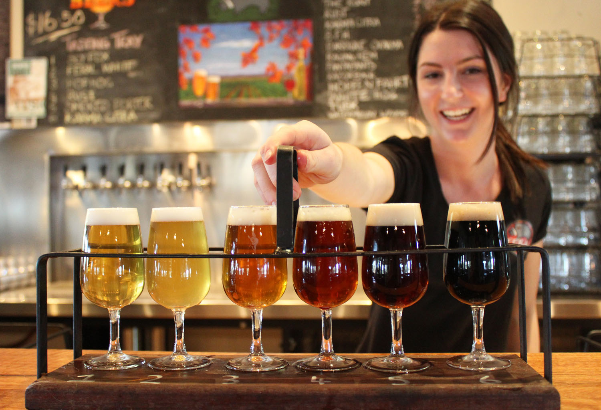

Our Brews
We offer FRESH. LOCAL. CRAFT. BEER.
Hopps House is independently owned
and all beer is carefully crafted by the the owners themselves.
A passion of the craft is what pulled us in and keeps us going. Hopps House has an earnest appreciation and respect for the craft lifestyle and the integrity and passion inherent in it. We believe that by sourcing high quality products as locally as possible, we are not only contributing to our community, but we are promoting a truly sustainable local environment. We are deeply grateful to have the opportunity to share with you the goods from some of Northeastern Ohio’s and the Midwest’s finest craftsmen and craftswomen.

Featured This Month
Pumpkin Farmhouse
***On Tap September 23rd*** Our Pumpkin Farmhouse brings the abundant fall pumpkins together with the nostalgic aromas of Thanksgiving. Our ale is a treat on the nose, brings a rich and warming flavor with a dry finish. Give Thanks!
7.1% ABV | 10 SRM Color | 26 IBU
Dunkel Weizen
*** On Tap September 14th*** Cousin to Moweizen, the Dunkelweizen has the similar fruity characters from the Hefeweizen yeast strain such as vanilla, clove and banana on top of a complex variety of roasted and caramelized barley-malts and a wheat base giving notes of chocolate, coffee, raisin and plum.
5.1% ABV | 17 SRM Color | 16 IBU
Current Brews
Frogtown IPA
It took the brewmaster from Frogtown, OH (aka Cassella) a 12 year trek to the west coast to come up with this recipe - Frogtown IPA, It's Hoppy!
6.1% ABV | 7 SRM Color | 45 IBU
Moeizen
This traditional German Ale has subtle fruity esters, most notably banana. Light and refreshing, you'll be asking for one Moweizen.
5.0% ABV | 3 SRM Color | 13 IBU
Wally Post RED
Summer, baseball and beer! This American Red is brewed to have a complex malt backbone with a subtle rye spiciness to celebrate a local legend. Play ball!
5.4% ABV | 14 SRM Color | 21 IBU
Honeywagon IPA
It's no load of manure - the aromatics of this Honeywagon has an eye-opening tropical mango-pineapple fruitiness. Honey malt sweetness provides enough body to accompany big hop flavors making this a refreshing American IPA. Cheers!
6.6 ABV | 6 SRM Color | 50 IBU
Marzen Oktoberfest
***On Tap September 14th*** Celebrate the fall season with our traditional Marzen Oktoberfest. Brewed to have a smooth and rich malty sweetness with a bitterness backbone to counter the sweetness. A dry finish and light ABV will let you enjoy this lager pint after pint, or litre after litre. Prost!
5.3% ABV | 10 SRM Color | 26 IBU
Black Bridge Smoked Porter
A little smokey! Takes us back to that childhood spot underneath the Black Bridge on the banks of the Chickasaw. Enjoy its beechwood smoky aroma and flavors on top of a roasty malt body, finishing chocolaty bitter, then sweet. Delicious!
5.4% ABV | 45 SRM Color | 38 IBU
Buzzards Glory
This golden colored ale is packed with a citrus thirst quench and finishes with a spicy rye note on the palate. Cheers!
5.1% ABV | 7 SRM Color | 28 IBU
Little Turtle IPA
This seasonal wet-hopped American IPA features Cascade hops from Heartland Hops in Ft. Recovery, OH. Whole wet hop cones late in the boiling brew kettle and dry-hopped in the fermenter bring out piney and citrus aromas and flavors, balancing a biscuit malt flavor.
5.5% ABV | 6 SRM Color | 42 IBU
OH Helles
Give me an O-H! Helles! This light, golden lager is brewed to be soft, bready and delicious. Lagered on top of Bavarian yeast, enjoy the delightful grassy aromas and sweet bready flavors. O-H! Helles!
4.9% ABV | 3 SRM Color | 16 IBU
Blackberry Prairie Wheat
With blackberries from Cranberry Prairie, our Blackberry Prairie Wheat has a purple hue tint to a pillowy white head with a hint of blackberry fruitiness on the nose and finish. In between is a refreshing medium-bodied American Wheat Ale that can make one fall in love with beer, all over again. Take a hearty drink and enjoy!
5.8% ABV | 11 SRM Color | 19 IBU
Burbank Blonde
This Blonde inspired me to take the leap into Craft Beer. Balancing simple country malt with Great Northwest Valley floral hops is what makes this beer so special. Enjoy!
4.8 ABV | 3 SRM Color | 20 IBU
Baked Oatmeal Stout
A chocolate & coffee roasted grain flavor upfront accompanies a nutty, slightly sweet, and creamy finish. We toast the oats so you can raise your glass - Cheers!
5.2% ABV | 35 SRM Color | 35 IBU
Steineman Station Saison
*** Returning October 19th*** Brewed with orange peel and coriander, it has a fragrantful spicy white head worth enjoying twice before that first quench. An addition of wheat malt helps fill the body, has pear to orange flavors, and finishes refreshingly smooth. This recipe was found with Steineman Station artifacts. All aboard!
6.9% ABV | 4 SRM Color | 24 IBU
Saison’s Greetings
***Out of Season*** Saison's Greeting! This Belgian Red spiced with cinnamon and ginger is a holiday treat. Big and warming, the sweet bold flavors of green apple and cinnamon bring you our Christmas Cheer.
7.7% ABV | 18 SRM Color | 23 IBU
Sawcreek Mosaic
***Out of Season***This Mosaic of an American Pale Ale has a slightly caramel malt body and a medium amount of bitterness. Plenty of late-in-the-boil hop additions of Mosaic give the beer a tropical fruity aroma and flavors, like mangos and pineapple. It's art for your tongue to enjoy. Cheers!
5.5% ABV | 5 SRM Color | 27 IBU
Sawcreek Pale
*** Out of Season*** An American Pale Ale featuring Cascade and Centennial hop flavoring balanced by a caramel malt backbone. Brewed for you near the banks of Chickasaw Creek!
5.2% ABV | 6 SRM Color | 25 IBU